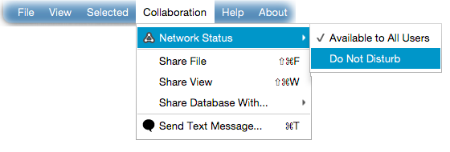

Changing your network status
By default, your network status is set to - Available to All Users
. This mode enables you to;
- be seen by other online users,
- send & receive text messages,
- share your files and receive shared files,
- share your views and receive shared views.
You can set your network status to - Do Not Disturb
from the Collaboration menu, under - Network Status
item as shown
in the following figure. In this mode, all features listed above will be disabled.
